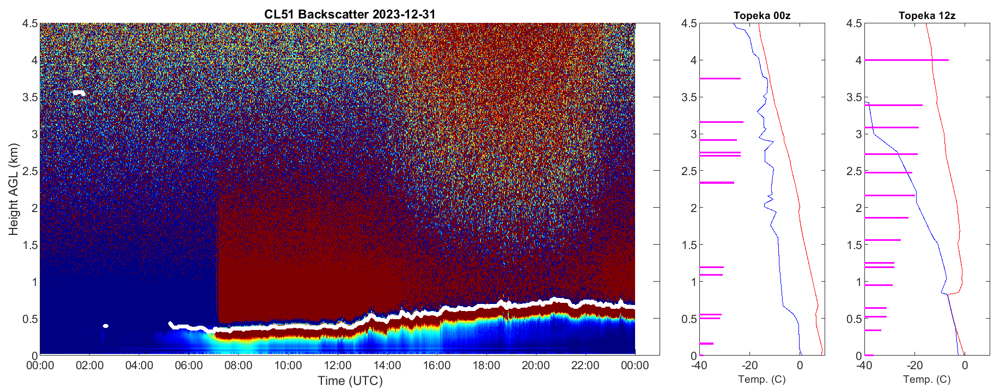

David A. Rahn
Associate Professor
University of Kansas
201 Lindley Hall
1475 Jayhawk Blvd.
Lawrence, KS 66045-7613
USA
E-mail: darahn@ku.edu
Associate Professor
I investigate mesoscale features including low-level jets, coastally trapped wind reversals, and coastal lows. I also explore the synoptic and large-scale influences on the lower atmosphere and the response of the marine atmospheric boundary layer.
The built environment in cities drastically alters the lower atmosphere leading to urban heat islands. I am interested in understanding the physical processes that influence the surface temperature and urban boundary layer, which has health impacts.
Measurements play an essential role in understanding the atmosphere and I use a wide range of observations including surface stations, radiosondes, satellite products, and I have conducted field campaigns with research aircraft.
Numerical simulations are an important tool that can help us advance our knowledge of how the atmosphere works. These simulations help to unravel fundamental processes occuring in urban and coastal environments.
I have taught a range of classes including:
Current ceilometer image from the KU field station:  (Click on image for full resolution.)
McBroom, B. D., D. A. Rahn, and N. A. Brunsell, 2024: Urban fraction influence on local nocturnal cooling rates from low-cost sensors in Dallas-Fort Worth Urban Climate 53, 101823.
Beamesderfer, E.R., Biraud, S.C., Brunsell, N.A., Friedl, M.A., Helbig, M., Hollinger, D.Y., Milliman, T., Rahn, D.A., Scott R.L., Stoy P.C., Diehl, J.L., and Richardson, A.D., 2023: The role of surface energy fluxes in determining mixing layer heights. Agric. For. Meteor. 342, 109687.
Blum, M., D. A. Rahn, B. Fredrick, and S. M. Polanco, 2023: Land Loss in the Mississippi River Delta: Role of Subsidence, Global Sea-Level Rise, and Coupled Atmospheric and Oceanographic Processes. Glob. Planet. Change, 222, 104048.
Boston, P. Q., B. Strouble, B., A. Balogun, B. Lugo-Martinez, M. McClain, M. M. Mitchell, K. Wassserman, D. Rahn, M. Greenberg, C. Garibay, 2023: Community voices on the experiences of community-based participatory research in the environmental justice movement., Soc. Sci., 12, 358.
Nielsen, K. F. and D. A. Rahn, 2022: Morning transition of the boundary layer over Dallas-Fort Worth. J. Applied Meteor. Clim., 61, 1433–1448.
Helbig, M., and Coauthors, 2021: Integrating continuous atmospheric boundary layer and tower-based flux measurements to advance understanding of land-atmosphere interactions. Agric. For. Meteor., 307, 108509.
Brunsell, N. A., D. A. Rahn, and D. B. Mechem, 2021: Impact of a nocturnal low-level jet on surface-layer turbulent characteristics. J. Geophys. Res., 126(7), D034083.
Cady, T. J., D. A. Rahn, N. A. Brunsell, and W. Lyles, 2020: Conversion of abandoned property to greenspace as a strategy to mitigate the urban heat island investigated with numerical simulations. J. Applied Meteor. Clim., 59, 1827-1843.
Aguirre, C., M. Rojas, R. D. Garreaud, and D. A. Rahn, 2019: Role of migratory anticyclones in the projected changes in upwelling-favourable winds at the ocean's eastern boundary systems. npj Climate Atmos. Sci, 2(1), 44.
Juliano, T. W., M. M. Coggon, G. Thompson, D. A. Rahn, J. H. Seinfeld, A. Sorooshian, and Z. J. Lebo, 2019: Marine Boundary Layer Clouds Associated with Coastally Trapped Disturbances: Observations and Model Simulations. J. Atmos. Sci., 76 2963-2993.
Juliano, T. W., Z. J. Lebo, G. Thompson, and D. A. Rahn, 2019: A New Perspective on Coastally Trapped Disturbances Using Data from the Satellite Era. Bull. Amer. Meteor. Soc., 100, 631-651.
Juliano, T. W., T. R. Parish, D. A. Rahn, and D. Leon, 2017: An Atmospheric Hydraulic Jump in the Santa Barbara Channel. J. Applied Meteor. Clim., 56, 2981-2998.
Rahn, D. A., T. R. Parish, and D. Leon, 2017: Synthesis of observations from the Precision Atmospheric Marine Boundary Layer Experiment (PreAMBLE). Mon. Wea. Rev., 145, 2325-2342.
Scaff, L., J. A. Rutllant, D. A. Rahn, R. Rondanelli, and S. Gascoin, 2017: Meteorological Interpretation of Orographic Precipitation Gradients along an Andes West Slope Basin at 30°S (Elqui Valley, Chile). J. Hydrometeor., 18, 713-727.
Parish, T. R., D. A. Rahn, and D. Leon, 2016: Aircraft Measurements and Numerical Simulations of an Expansion Fan off the California Coast. J. Applied Meteor. Clim., 55, 2053-2062.
Rahn, D. A., and C. J. Mitchell, 2016: Diurnal climatology of the boundary layer in southern California using AMDAR Temperature and Wind Profiles. J. Applied Meteor. Clim., 55, 1123-1137.
Rahn, D. A., T. R. Parish, and D. Leon, 2016: Observations of large wind shear above the marine boundary layer near Point Buchon, CA. J. Atmos. Sci., 73, 3059-3077.
Parish, T. R., D. A. Rahn, and D. Leon, 2016: Research Aircraft Determination of D-value Cross-Sections. J. Atmos. Oceanic Technol., 33, 391-396.
Liu, W., Li, X., and Rahn, D. A., 2015: Storm event representation and analysis based on a directed spatiotemporal graph model. Int. J. Geogr. Inf. Sci., doi:10.1080/13658816.2015.1081910
Rahn, D. A., Rosenbluth, B., and J. A. Rutllant 2015: Detecting Subtle Seasonal Transitions of Upwelling in North-Central Chile. J. Phys. Oceanogr., 45, 854-867.
Parish, T. R., D. A. Rahn, and D. Leon, 2015: Aircraft Observations and Numerical Simulations of the Developing Stage of a Southerly Surge near Southern California. Mon. Wea. Rev., 143, 4883-4903.
Rahn, D. A., T. R. Parish, and D. Leon, 2014: Coastal jet adjustment near Point Conception, CA with opposing wind in the bight. Mon. Wea. Rev., 142, 1344-1360.
Rahn, D. A. 2014: Observations of the marine boundary layer under a cutoff low over the southeast Pacific Ocean. Meteorol. Atmos. Phys., 123, 1-15.
Parish, T. R., D. A. Rahn, and D. Leon, 2014: Aircraft Observations of the Marine Boundary Layer Adjustment near Point Arguello, CA. J. Applied Meteor. Clim., 53, 970-989.
Rahn, D. A. and R. D. Garreaud, 2014: A synoptic climatology of the near-surface wind along the west coast of South America. Int. J. Climatol., 34, 780-792.
Rahn, D. A., T. R. Parish, and D. Leon, 2013: Airborne measurements of coastal jet transition around Point Conception, CA Mon. Wea. Rev., 141, 3827-3839.
Parish, T. R., D. A. Rahn, and D. Leon, 2013: Airborne Observations of a Catalina Eddy. Mon. Wea. Rev., 141, 3300-3313.
Rahn, D. A., 2012: Influence of large scale oscillations on upwelling-favorable coastal wind off central Chile. J. Geophys. Res., 117 D19114, doi:10.1029/2012JD018016.
Juliá, C., D. A. Rahn, and J. A. Rutllant, 2012: Assessing the influence of the MJO on strong precipitation events in subtropical, semi-arid north-central Chile (30°S). J. of Climate., 25, 7003-7013.
Rahn, D. A., R. D. Garreaud, J. A. Rutllant, 2011: The low-level atmospheric circulation near Tongoy Bay / point Lengua de Vaca (Chilean coast, 30°S). Mon. Wea. Rev., 139, 3628-3647.
Garreaud, R., J. Rutllant, R. Muñoz, D. Rahn, M. Ramos and D. Figueroa, 2011 VOCALS-CUpEx: The Chilean Upwelling Experiment. Atmos. Chem. and Phys., 11, 2015-2029.
Rahn, D. A. and Garreaud, R. D., 2010: Marine boundary layer over the subtropical southeast Pacific during VOCALS-REx — Part 1: Mean structure and diurnal cycle. Atmos. Chem. Phys., 10, 4491-4506.
Rahn, D. A. and Garreaud, R. D.,2010: Marine boundary layer over the subtropical southeast Pacific during VOCALS-REx — Part 2: Synoptic Variablity. Atmos. Chem. Phys., 10, 4507-4519.
Rahn, D. A. and T. R. Parish, 2010: Cessation of the 22-25 June 2006 Coastally Trapped Wind Reversal. J. Appl. Meteor. Climatol., 49, 1412-1428.
Rahn, D. A. and T. R. Parish, 2008: A Study of the Forcing of the 22-25 June 2006 Coastally Trapped Wind Reversal based on Numerical Simulations and Aircraft Observations. Mon. Wea. Rev., 136 4687-4708.
Parish, T. R., D. A. Rahn, and D. Leon, 2008: Aircraft Observations of a Coastally Trapped Wind Reversal off the California Coast. Mon. Wea. Rev., 136, 644-662.
Rahn, D. A., and T. R. Parish, 2007: Diagnosis of the Forcing and Structure of the Coastal Jet near Cape Mendocino Using In Situ Observations and Numerical Simulations. J. Appl. Meteor. Climatol., 46, 1455-1468.
Garreaud, R., J. Rutllant, R. Muñoz, D. Rahn, M. Ramos, D. Figueroa, 2010: VOCALS-CUpEx: The Chilean Upwelling Experiment. CLIVAR-Exchanges Newsletter, 15(2), 5-7.
Rahn, D. A., T. R. Parish, and T. W. Juliano, 2017: Deviations of Atmospheric Coastal Flow from the Open-channel Hydraulics Analogy. Geophysical Fluid Dynamics, New Orleans, AGU Fall Meeting, NG13A-02.
Rahn, D. A., T. R. Parish, and D. Leon, 2016: Aircraft Measurements of a Low-Level, ThreeLayer Structure Offshore of Pt. Buchon, CA and the Possible Role of Kelvin-Helmholtz Instability. 20th Conference on Integrated Observing and Assimilation Systems for the
Atmosphere, Oceans, and Land Surface (IOAS-AOLS), New Orleans, LA, Amer. Meteor. Soc., 3A.6. 3A.6.
Link to presentation
Rahn, D. A., B. Rosenbluth, and J. Rutllant, 2013: Seasonal Transition of the Southeast Pacific Anticyclone. Trecer Congreso de Oceanografía Física, Meteorología y Clima, Santiago, Chile. VC.P16
Rahn, D. A., T. R. Parish, and D. Leon, 2013: Abrupt marine boundary layer changes revealed by airborne in situ and lidar measurements. 6th Symposium on Lidar Atmospheric Applications, Austin, TX, Amer. Meteor. Soc., J3.4.
Link to presentation
Rahn, D. A., 2012: Assessing intraseasonal to interannual variability of upwelling-favorable coastal winds off central Chile. 10th Symposium on the Coastal Environment, New Orleans, LA, Amer. Meteor. Soc., 3A.3.
Rahn, D. A., and R. D. Garreaud, 2011: Climatology of the 10-m wind along the west coast of South America from 30 years of high-resolution reanalysis. Segundo Congreso de Oceanografía Física, Meteorología y Clima, Coquimbo, Chile.
Rahn, D. A., and J. Rutllant, 2011: Eventos de Precipitación intensa en función de la altitud en el valle del Elqui: Parte III: Eventos aislados en La Serena y en Embalse Laguna [Intense precipitation events as a function of altitude in the Elqui valley: Part III: Isolated events in La Serena and the Laguna Dam]. Segundo Congreso de Oceanografía Física, Meteorología y Clima, Coquimbo, Chile.
Rahn, D. A., R. Garreaud, J. Rutllant, and R. Muñoz, 2010: Daytime coastal jet maximum in central Chile (30°S) during VOCALS-CUpEx. Eos Trans. AGU, 91(26), Meet. Am. Suppl., Abstract A24B-04, Foz do Iguaçu, Brasil.
Link to presentation
Rahn, D. A., 2009: Variabilidad sinoptica de la capa limite marina durante VOCALS REx (primavera 2008) [Synoptic variability of the marine boundary layer during VOCALS-REx (spring 2008)]. Primer Congreso Oceanografia Fisica Meteorgia y Clima, Concepcion, Chile 3.
Link to presentation
Enlace a la versión español.
Rahn, D. A., and R. Garreaud, 2009: Observed Upsidence During VOCALS, 2nd VOCALS Science Meeting, Seattle, WA 3B.5
Link to presentation
Rahn, D. A., 2007: Aircraft Observations of a coastally trapped wind reversal off the California coast, 7th Conf. on Coastal Met./7th Conf. on Urban Environ., San Diego, CA, Amer. Meteor. Soc, 8.2.
Link to presentation
 https://orcid.org/0000-0003-3685-1176
https://orcid.org/0000-0003-3685-1176{kind=link}